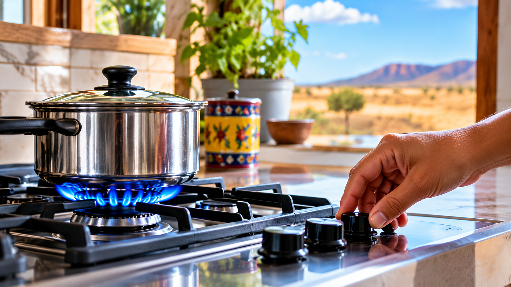
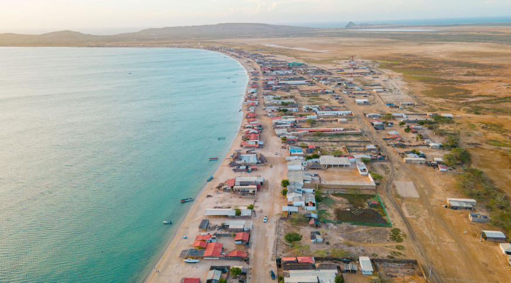

Conduce el gas natural hacia las zonas donde se encuentran los usuarios.
GAS NATURAL · LA GUAJIRA
EL GAS NATURAL TAMBIÉN HACE PARTE DE TU HOGAR.
Conoce cómo llega, cómo se utiliza y qué debes tener en cuenta para hacer un uso responsable del gas natural en tu hogar.
DESCUBRE CÓMO FUNCIONA →
GUÍA PARA EL HOGAR
LA GUAJIRA
01
CONOCE EL GAS
02
ENTIENDE TU CONSUMO
03
USA EL GAS CON SEGURIDAD
01 / CONOCE EL GAS
¿CÓMO LLEGA
¿CÓMO LLEGA
EL GAS NATURAL
A TU HOGAR?
El gas natural llega a los hogares mediante una red de distribución. Antes de utilizarlo en la cocina u otros equipos, pasa por diferentes elementos que permiten conducirlo y registrar su consumo.
Permite llevar el gas desde la red hasta la instalación del hogar.
Registra la cantidad de gas natural utilizada durante el consumo.
El gas llega a los equipos domésticos conectados a la instalación.
GAS NATURAL EN CASA
Conocer este recorrido ayuda a entender mejor cómo funciona el servicio dentro del hogar.
02 / ENTIENDE TU CONSUMO
¿POR QUÉ PUEDE CAMBIAR
¿POR QUÉ PUEDE CAMBIAR
TU CONSUMO DE GAS?
El consumo de gas natural no siempre es igual. Puede cambiar según la forma en que se utiliza en cada hogar y el tiempo de uso de los equipos.
01
TIEMPO DE USO
El tiempo que permanecen encendidos los equipos influye en la cantidad de gas utilizada.
02
HÁBITOS DEL HOGAR
La frecuencia con la que cocinas o utilizas otros equipos puede hacer variar el consumo.
03
ESTADO DE LOS EQUIPOS
El funcionamiento y cuidado de los equipos también hacen parte de un uso responsable.
OBSERVA TUS HÁBITOS
Pequeños cambios en la forma de utilizar el gas pueden reflejarse en el consumo.
MENOR USO
MAYOR USO
03 / USA EL GAS CON SEGURIDAD
EL OLOR A GAS ES
EL OLOR A GAS ES
UNA SEÑAL QUE
NO DEBES IGNORAR.
Si percibes olor a gas, actúa con precaución. Evita acciones que puedan generar una llama o una chispa y presta atención a tu entorno.
¿PERCIBES OLOR A GAS?
ACTÚA CON PRECAUCIÓN.
→
01
VENTILA EL LUGAR
Abre puertas y ventanas para favorecer la circulación del aire.
02
EVITA LLAMAS Y CHISPAS
No enciendas fuego ni manipules interruptores eléctricos en el lugar.
03
ALÉJATE SI HAY RIESGO
Sal del lugar y busca orientación mediante los canales correspondientes.
RECUERDA
Mantener una buena ventilación y prestar atención al estado de las instalaciones y equipos ayuda a promover un uso más seguro del gas natural en casa.

LA GUAJIRA
TERRITORIO,
TERRITORIO,
COMUNIDAD Y HOGARES.
Información para comprender el gas natural y promover su uso responsable en el hogar.